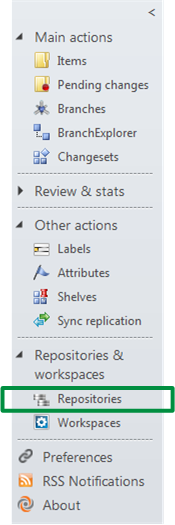
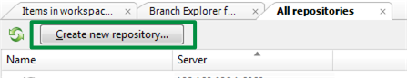
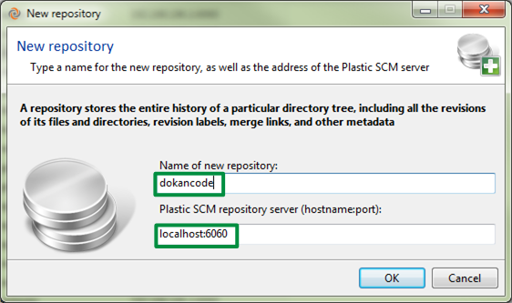

Let’s create an empty repository to work with the codebase we just uncompressed. Remember, the repository is the “database” where the changes will be stored. In order to create a repository: click on the “repositories” option to display the repositories view.

Figure 1: Click on repositories
Then click on the “create repository” button to start the process:
Figure 2: Click on label on the Branch Explorer
Then the “create label” dialog will show up. Enter “Baseline00” for the label name and enter a comment as the following figure shows:

Figure 3: Create New Repository
Then the “create repository” dialog shows up. You need to enter a name and specify the server. In my case (and most likely yours too), I’m using my local server running on my laptop, so these are the values to type:

Figure 4: Dialog to create new Repository